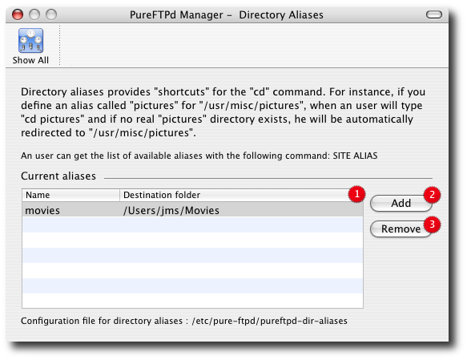

PureFTPd Manager - Directory AliasesDirectory aliases provides "shortcuts" for the "cd" command. For instance, if you define an alias called "pictures" for "/usr/misc/pictures", when an user will type "cd pictures" and if no real "pictures" directory exists, he will be automatically redirected to "/usr/misc/pictures". Unlike symbolic links, "cd pictures" will work from any directory. Tildes are *not* expanded. An user can get the list of available aliases with the following command: SITE ALIAS

2. Button to add a new alias. 3. Button to remove an alias. |